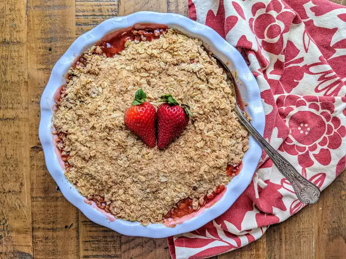

Strawberry Rhubarb Crisp

This strawberry rhubarb crisp is perfect for those who wonder what to do with that big rhubarb plant in the
garden. This recipe is your answer — it will have you coming back for more!
Ingredients
- Strawberries
- White sugar
- Flour
- Oats
- Butter
Steps
- Step 1: Make the first layer with fruit, sugar, and flour. Place in the baking dish.
- Step 2: Make the topping, then sprinkle it over the fruit layer.
- Step 3: Bake in the preheated oven until the topping is crisp and lightly browned.